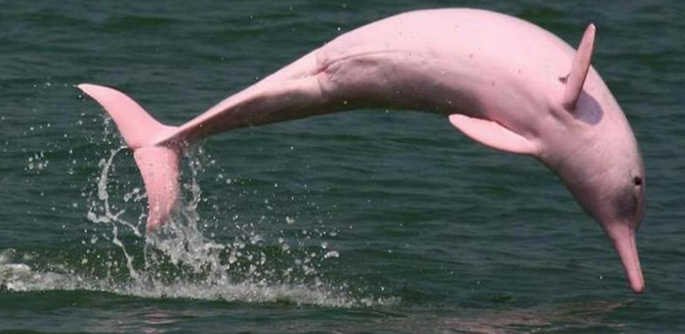
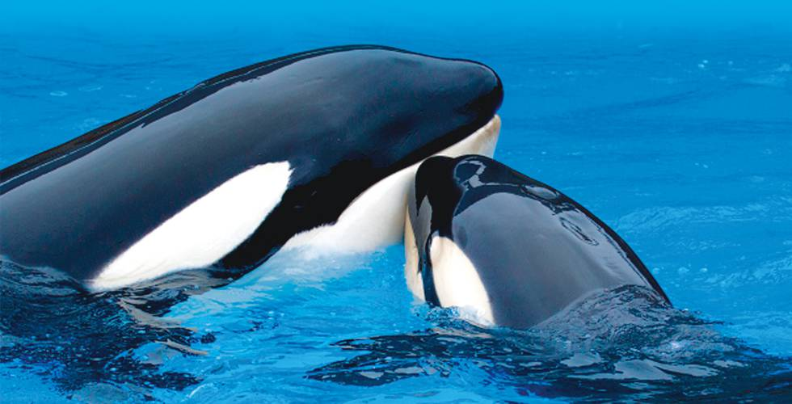

<!DOCTYPE html>

<html>
	<head>

		<title>
		Narval
		</title>
	</head>
</html>

<h1> Narval </h1>
<p></p>

<body bgcolor= #b7edec>
<p align="center"><font size= "4" color= "black">Monodon monoceros</p>

<link rel="stylesheet" type="text/css" href="../css/estilos.css" media="screen">

<body>
<h2> Distribución geográfica </h2>
<p>Se distribuye principalmente en aguas de la región ártica del norte de Canadá, los mares del lado ruso del océano Ártico y al norte del océano Atlántico. Habita principalmente en torno a los bloques de hielo que se forman durante los inviernos prolongados del Ártico, migrando a las bahías y fiordos circumpolares durante el verano. Se cree que la población mundial es de algo más de 75 000 ejemplares. En 2008 fue catalogado en la Lista Roja de la UICN como especie casi amenazada, debido a que se mantiene una caza significativa, controlada, por parte del pueblo inuit en Canadá y Groenlandia (Dinamarca), los cuales se benefician con su carne, grasa y el comercio del colmillo. También se ubicó en esta categoría por la evidente disminución en la población de algunos grupos, la falta de certeza sobre la cifra total de animales y el desconocimiento de las tendencias de crecimiento.</p>

<h2> Biología </h2>
<p>Los narvales presentan un patrón moteado de color gris que les cubre toda la longitud del dorso y los flancos, con el vientre de color blanco; este moteado se acentúa con la edad y los machos más viejos pueden tener solamente una gran mancha angosta que le cubre únicamente la línea central de la espalda, con el resto del cuerpo blanco. Los recién nacidos son de color gris o marrón y desarrollan el patrón moteado hasta los dos años de edad.10​ El margen posterior de la aleta caudal es marcadamente convexo y la aleta dorsal está sustituida por una cresta alargada y pequeña de unos 5 cm de alto por 60 a 90 cm de longitud. En promedio los machos miden 4,5 m y pesan 1600 kg, mientras las hembras miden 4 m y pesan 1000 kg, existiendo un dimorfismo sexual moderado.11​ Las aletas pectorales miden de 30 a 40 cm y la aleta caudal mide entre 1 y 1,2 m de envergadura. Entre el 30 y 35 % del peso corporal es grasa, el 25 % es músculo y el 10 % piel. El espesor de la piel y capa de grasa subyacente varía entre cinco y diez centímetros con un promedio de entre 7 y 8 centímetros</p>
</body>

<table border="5" class="center">
<tr>

<td>
		<p><a href = '../index.html'><figcaption style = 'text-align:center'>Inicio</figcaption ></a></p>
	</td>
	<td>
		<p><a href = '../html/ballenajorobada.html'><figcaption style = 'text-align:center'>Ballena jorobada</figcaption></a></p>
	</td>

	<td>
		<p><a href = '../html/delfin.html'><figcaption style = 'text-align:center'>Delfin</figcaption></a></p>
	</td>

</tr>
<tr>
	<td>
		<p><a href = '../html/delfinderio.html'><figcaption style = 'text-align:center'>Delfin de rio</figcaption></a></p>
	</td>
	
	<td>
		<p><a href = '../html/orca.html'><figcaption style = 'text-align:center'>Orca</figcaption></a></p>
	</td>
	<td>
		<p><a href = '../html/ballenaazul.html'><figcaption style = 'text-align:center'>Ballena azul</figcaption></a></p>


	</td>
</tr>

</table>

